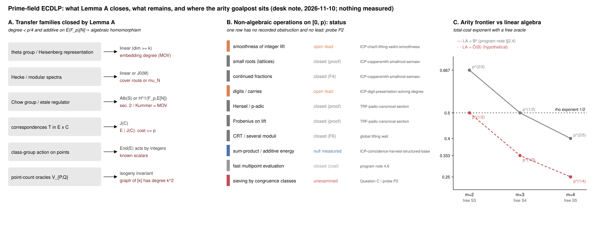

Date 2026-11-10. Study
research/ecdlp_subexp_ideas_20261110/ (README with
derivations and sources). Classification desk note. No
algorithm is claimed, nothing was measured, no disposition changes.
Labels: [derived] checkable from the text;
[literature] recalled, not re-read; [proposed]
idea or prediction; [closed on paper] reduces to a recorded
obstruction. Quoted repository numbers: [pcc:unverified].
The research-kb server and CLI were unavailable in this
session; the keyword census that replaced them is in README “Sources
checked”.
[derived]Let N = #E(F_p) be prime, G/F_p a connected commutative algebraic group, f : E → G a morphism of degree d with f(O) = 0 and f(X+Y) = f(X) + f(Y) for all X, Y ∈ E(F_p). If d < p/4 then f is a homomorphism of algebraic groups: h(X,Y) = f(X+Y) − f(X) − f(Y) is a morphism E × E → G of degree O(d) vanishing on all N² ≈ p² rational points, and a nonzero h vanishes on at most O(d·p) of them (Lang–Weil / Bézout + Hasse–Weil). By Chevalley, f factors through the abelian part A of G and E is an isogeny factor of A; any image in the linear part needs N | #L(F_p) = p^u ∏(p^{d_i} − ε_i), i.e. N = p or dim L ≥ k = ord_N(p), the embedding degree.
Closed at once: theta-group / Heisenberg representations (spectrum = Weil pairing), Hecke spectra, Chow-group and étale regulators, correspondences T ⊂ E × C (E | J(C), cost ≥ p), class-group action on points (principal ideals act as known integers because π = 1 on E(F_p)), point-count oracles (the graph of [k] has degree k²). Limit: degree ≥ p maps can be cheap (Frobenius); Conjecture A′ extends the lemma to straight-line complexity and is a Lean target (P1).
Kummer = MOV. Q ↦ [π(R) − R] ∈ E[N]/(π−1)E[N] ≅ Z/N with [N]R = Q is the discrete logarithm up to a unit; it is computable exactly when E[N] is rational over a small field, i.e. when k is small. Every cohomological reformulation inherits the pairing obstruction.
[closed on paper]For a pencil E_t with E_{t₀} = E, a curve C ∈ |D| with C·F = d
through d prescribed fibre points exists iff Σ P_i = T_D (restriction of
H⁰(S, D) to the fibre is the Riemann–Roch space of a degree-d bundle):
the multisection relation Σ P_i = tr_C(t₀) is Semaev’s
condition. Two-fibre transfers through a nodal (G_m) or smooth-order
fibre fail because the specialisation kernels Λ₀, Λ₁ ⊂ Z^r are
unrelated. Ulmer’s unbounded-rank families need generators of degree
exponential in log p. The open question remains the
section-through-a-point timing
(LEAD-EXO-global-lift-height; frozen family α = 3 against
the α < 1/2 a source needs).
[derived]With a free oracle, cost(B) ≈ p/B^{m−1} + LA(B):
| m | oracle | LA = B² | LA = Õ(B) | reading |
|---|---|---|---|---|
| 2 | free S₃ | p^{2/3} | p^{1/2} | never beats rho |
| 3 | free S₄ | p^{1/2} (tie) | p^{1/3} | beats rho only with structured LA |
| 4 | free S₅ | p^{2/5} | p^{1/4} | program note’s first viable arity |
The target splits: (T1) an S₄ oracle at δ = 1/3 (lattice reach 1/24 asymptotic, 1/35.5 at feasible dimension) plus (T3) a relation matrix with a sub-quadratic solve, or (T2) an S₅ oracle at δ = 1/5. The program note’s “first arity that could beat rho is m = 4” assumes B² linear algebra and should record that assumption.

A: families Lemma A closes. B: the inventory of non-algebraic
operations on [0, p) with the recorded status of each; one row (sieving
by congruence classes) has neither an obstruction nor a lead. C: the
arity frontier under the two linear-algebra costs. Drawn from
data/routes.json; nothing measured.
[proposed]Lemma A and Shoup leave only non-algebraic integer operations on coordinates. The inventory (smoothness, lattices, continued fractions, digits, Hensel, Frobenius on lifts, CRT, sum–product, fast evaluation) is closed or an active lead in every row but one: sieving by congruence classes, the Eratosthenes step that makes NFS/FFS relation collection O(1) per candidate. Its elliptic form, Question C: a base F with |F| = p^δ, membership in poly(log p), and an indicator 1_F(Q + aG) with a Fourier coefficient ≫ √|F|/N at a frequency computable from the curve. Coordinate boxes satisfy the first (the character-sum lead measured nulls for the second); scalar bases {kG : k ≤ B} satisfy the second and not the first. Expected answer: no such base; P2 is the exact measurement.
[proposed]Each runs under controlled-experiment if scheduled; none
is run here. Expected outcomes: P1 proof, P2 null, P3 closure.